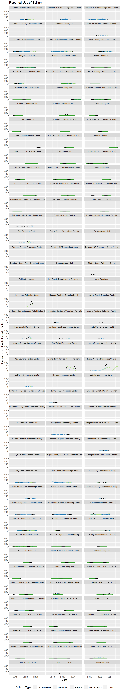
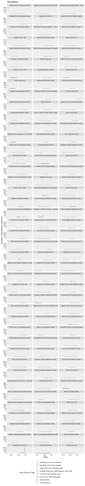
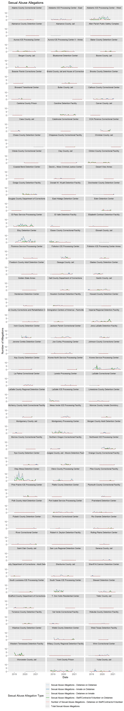
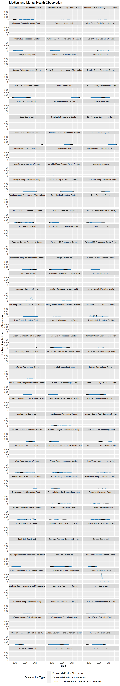
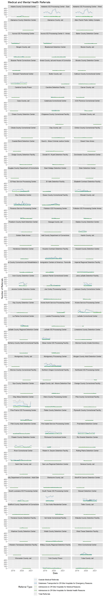

C Facet Plots
C.1 Assaults
C.2 Disciplinary

C.3 Solitary

Figure C.1: Facet plot of solitary instances reported by facility over time
C.4 Use of Force

C.5 Sexual Abuse and Assault
C.5.1 Allegations

C.5.2 Allegations Substantiated
C.6 Medical
C.6.1 Medical Mental Observation

C.6.2 Infectious Disease

C.6.3 Medical and Mental Health Referrals

C.6.4 Sick Call Requests and Encounters

C.6.5 Suicide Attempts and Watches

C.6.6 Hunger Strikes

Figure C.2: Facet plot of hunger strikes per month by facility.